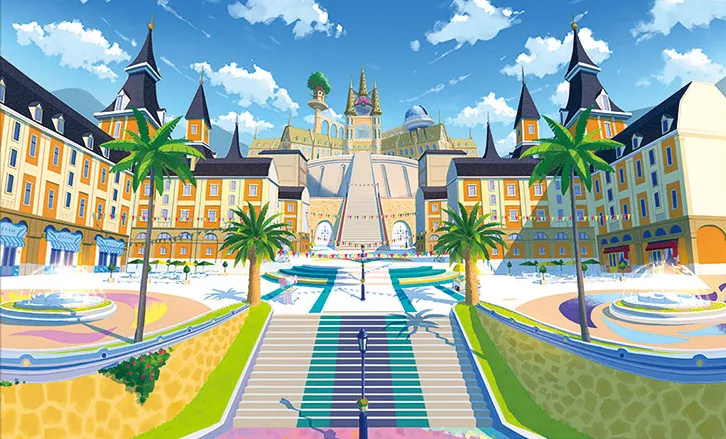
Ciudad Meseta
La ciudad más grande de Paldea, en el centro de la región. Aquí está la academia donde estudia el protagonista.
Generación 9 · Escarlata y Púrpura
Paldea se inspira en la península ibérica, con ciudades de estilo español y portugués, campos, montañas nevadas y un enorme cráter en el centro, el Gran Cráter de Paldea. Es una región de mundo abierto: se puede ir a casi cualquier sitio desde el principio.
Pokémon Escarlata y Pokémon Púrpura salieron en 2022 y fueron los primeros de mundo abierto. Trajeron 103 Pokémon nuevos, la teracristalización y la posibilidad de jugar con amigos por toda la región.
El protagonista empieza en la Academia Naranja o en la Academia Uva, según la versión. Allí tiene una asignatura especial, la Búsqueda del Tesoro, y decide su propio camino. Hay tres historias: la Ruta Victoria, la Ruta Estrella y la Ruta Leyenda.

Mapa de la región de Paldea.

La ciudad más grande de Paldea, en el centro de la región. Aquí está la academia donde estudia el protagonista.
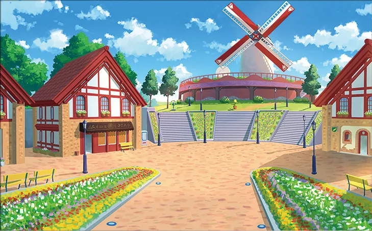
Un pueblo agrícola al sureste con un molino de viento. Su gimnasio es de tipo Planta.
Gimnasio: Planta
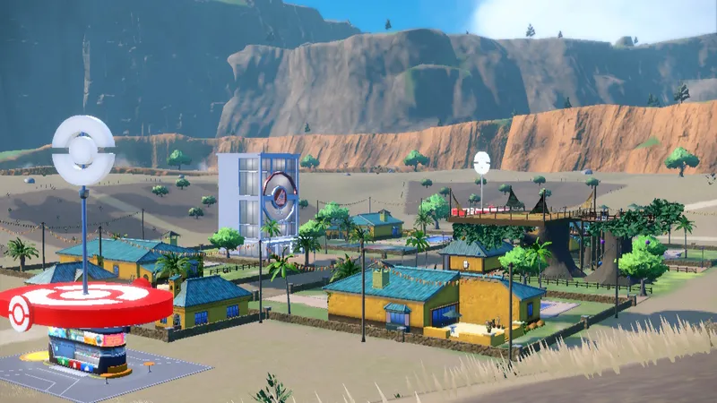
Un pueblo en el centro suroeste de Paldea, con un gimnasio de tipo Bicho.
Gimnasio: Bicho
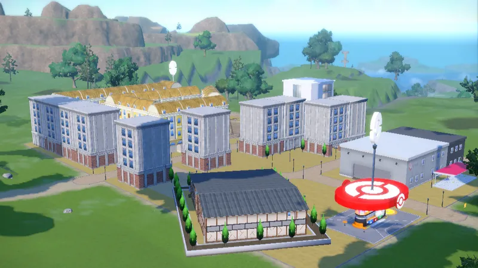
Un pueblo en el norte de Paldea, con edificios de oficinas. Su gimnasio es de tipo Normal.
Gimnasio: Normal
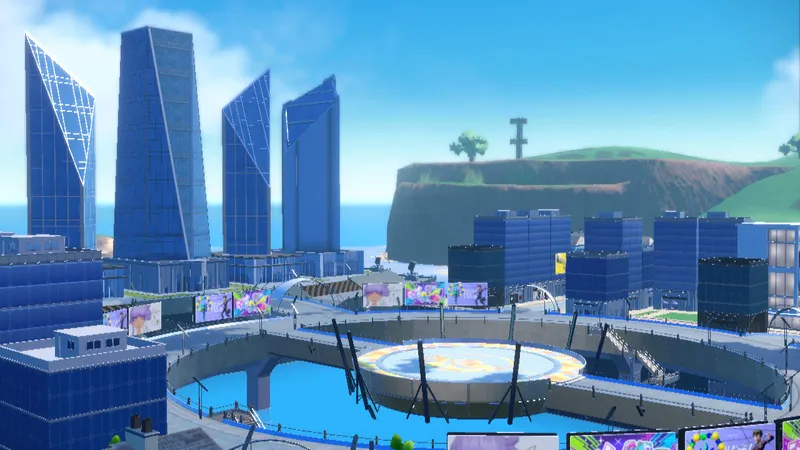
Una ciudad moderna en la costa este, con rascacielos y mucha vida. Su gimnasio es de tipo Eléctrico.
Gimnasio: Eléctrico
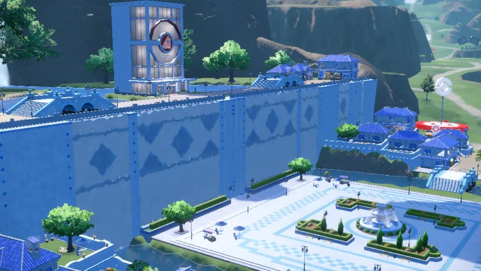
Una ciudad en el oeste de Paldea, con edificios azules y una gran arena. Su gimnasio es de tipo Agua.
Gimnasio: Agua
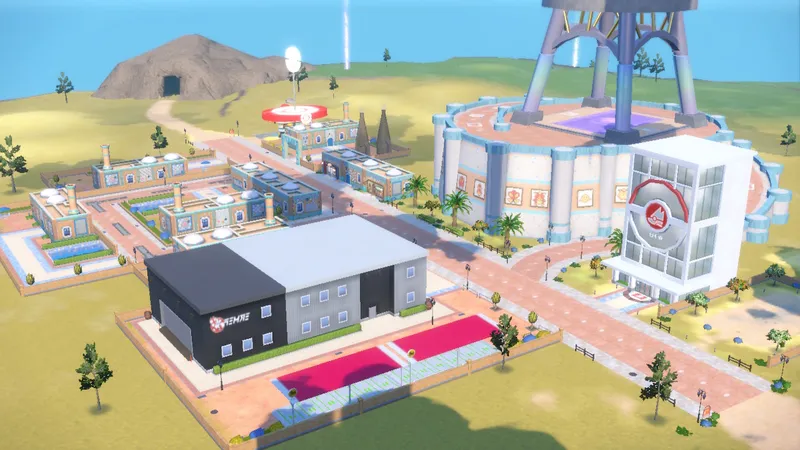
Un pueblo en una península del suroeste. Su gimnasio es de tipo Psíquico.
Gimnasio: Psíquico
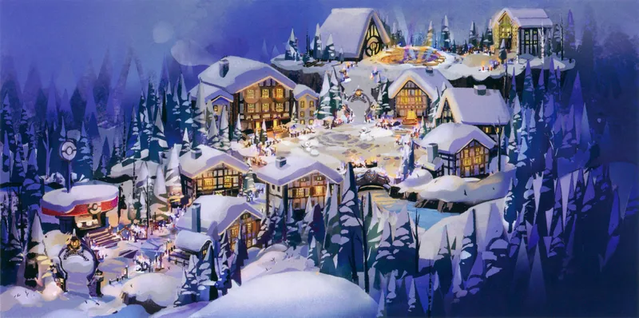
Un pueblo en lo alto de la Sierra Napada, entre nieve y casas de madera. Su gimnasio es de tipo Fantasma.
Gimnasio: Fantasma
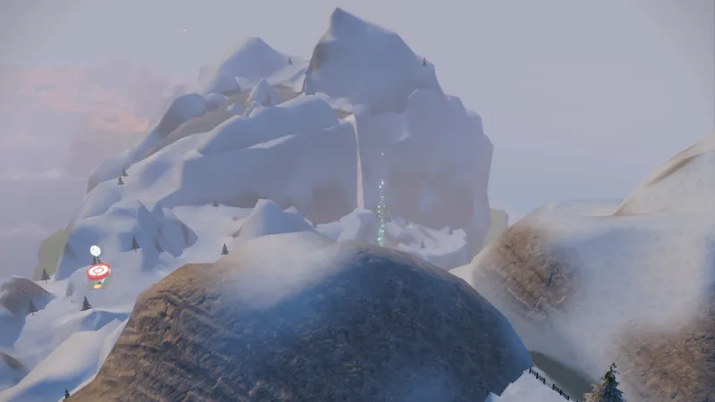
Una cordillera nevada, una de las montañas más altas de Paldea. Allí está el gimnasio de tipo Hielo.
Gimnasio: Hielo
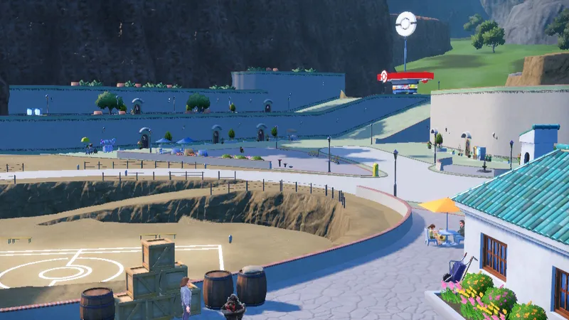
Un pueblo minero, junto a un gran agujero en el suelo.
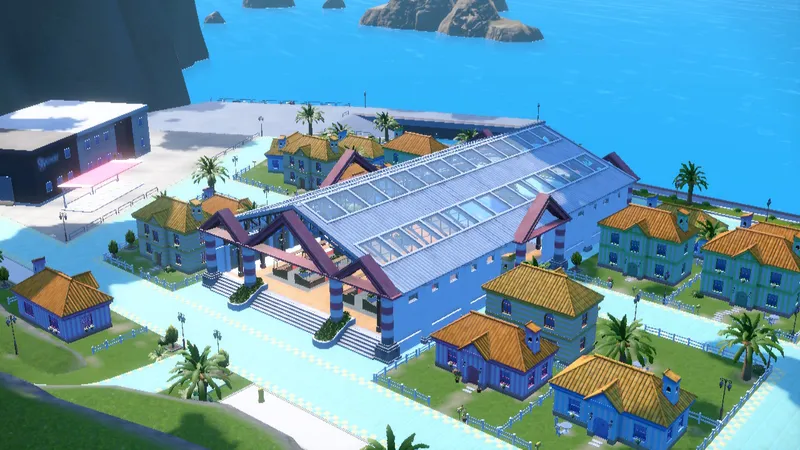
Un pueblo costero en el oeste de Paldea, con casas de colores.
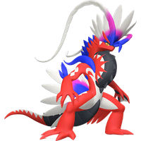
Lucha Dragón
Un Pokémon antiguo que llegó a Paldea desde el Gran Cráter. Es el legendario de Escarlata.
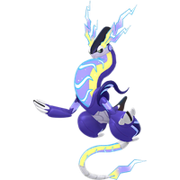
Eléctrico Dragón
Un Pokémon futurista que también salió del Gran Cráter. Es el legendario de Púrpura.
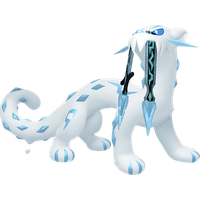
Siniestro Hielo
Uno de los cuatro Pokémon de la Ruina. Es ágil y muy peligroso, y tiene espadas de hielo.
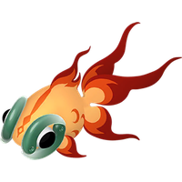
Siniestro Fuego
Uno de los cuatro Pokémon de la Ruina. Es capaz de hacer hervir el agua con su fuego.
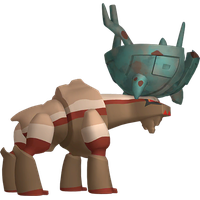
Siniestro Tierra
Uno de los cuatro Pokémon de la Ruina. Es enorme y puede provocar temblores.
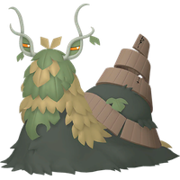
Siniestro Planta
Uno de los cuatro Pokémon de la Ruina. Es muy sigiloso y su cuerpo marchita las plantas.
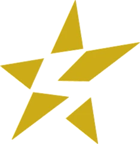
El Team Star es un grupo de alumnos rebeldes de la academia. Se rebelan contra la escuela con su estilo propio y se esconden en cinco bases, una por cada tipo: Siniestro, Veneno, Lucha, Fuego y Hada.
Cada base tiene un jefe y hay que derrotarlo con la ayuda de un coche especial, el Star-Mobile. Cuando se vence a los cinco jefes, hay que enfrentarse a la jefa de todos.
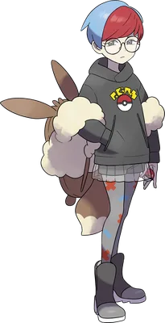
Jefa del Team Star
Una alumna con un aire tímido y muy lista. En el Team Star se hace llamar Casiopea y es la Autoridad Suprema.
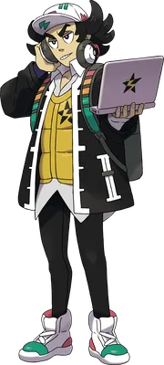
Jefe de la Base Segin, el grupo Siniestro. Es un estudiante muy listo y aficionado a los ordenadores.
Los ocho gimnasios de Paldea, en el orden normal del viaje. En esta región se puede ir a cualquiera de ellos en el orden que se quiera.
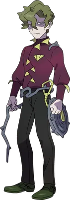
Pueblo Altamía
Planta · Medalla Planta
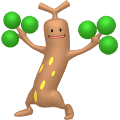
Pokémon estrellaSudowoodo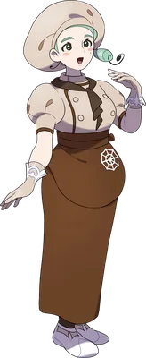
Pueblo Pirotín
Bicho · Medalla Bicho
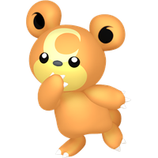
Pokémon estrellaTeddiursa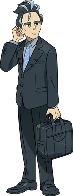
Pueblo Mestura
Normal · Medalla Normal
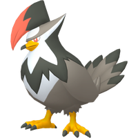
Pokémon estrellaStaraptor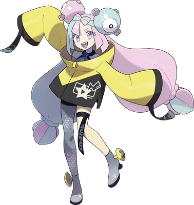
Ciudad Leudal
Eléctrico · Medalla Eléctrico
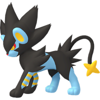
Pokémon estrellaLuxray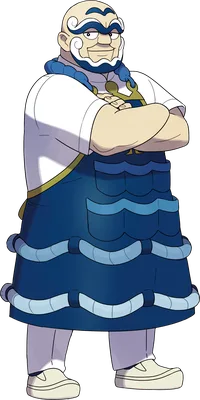
Ciudad Cántara
Agua · Medalla Agua
 Pokémon estrellaCrabominable
Pokémon estrellaCrabominable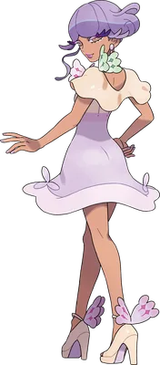
Pueblo Alforno
Psíquico · Medalla Psíquico
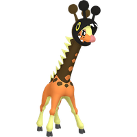
Pokémon estrellaFarigiraf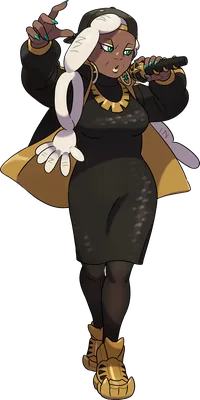
Pueblo Hozkailu
Fantasma · Medalla Fantasma
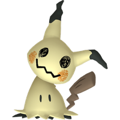
Pokémon estrellaMimikyu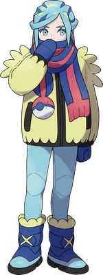
Sierra Napada
Hielo · Medalla Hielo
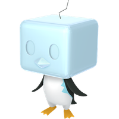
Pokémon estrellaCetitanLa Liga está en Ciudad Meseta. Hay que tener las ocho medallas y pasar un examen. Después se vence al Alto Mando y, por último, a la Supercampeona.
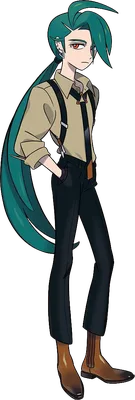
Alto Mando
Tierra
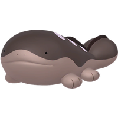
Pokémon estrellaClodsire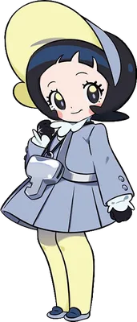
Alto Mando
Acero
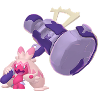
Pokémon estrellaTinkatonAlto Mando
Volador
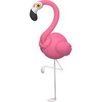
Pokémon estrellaFlamigo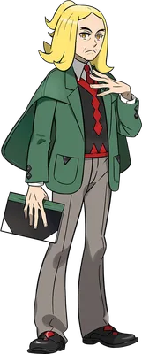
Alto Mando
Dragón
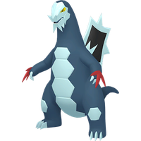
Pokémon estrellaBaxcalibur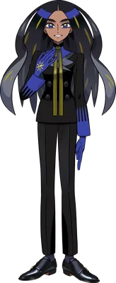
Supercampeona
La presidenta de la Liga y la mejor entrenadora de Paldea. Hay que vencer al Alto Mando y superar un examen para llegar a ella.
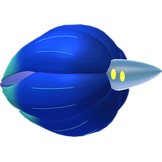
Pokémon estrellaGlimmora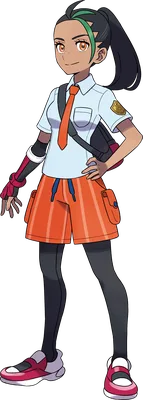
Tu amiga y rival. Es una alumna con mucho talento y casi nadie le gana. Te empuja a mejorar.
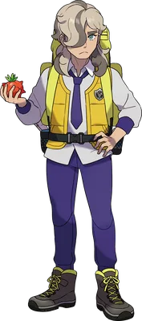
Un entrenador joven que busca una medicina muy especial para su Pokémon. Te pide ayuda en la Ruta Leyenda.
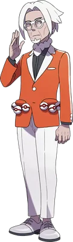
El director de la academia. Es amable, elegante y está muy orgulloso de sus alumnos.
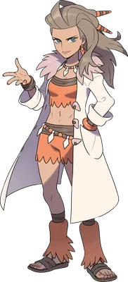
Una de las profesoras de la academia. Estudia el pasado de Paldea y de los Pokémon.
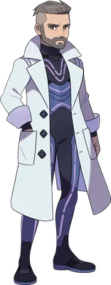
Un investigador que estudia el futuro. Quiere saber qué pasará con los Pokémon más adelante.